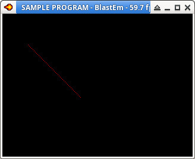

參考資訊：
https://github.com/Stephane-D/SGDK
https://github.com/iratahack/m68k-elf-gcc/releases
main.c
#include <genesis.h>
int main(bool hard)
{
Line pt = { 0 };
u16 palette[16] = { 0 };
palette[0] = RGB24_TO_VDPCOLOR(0x000000);
palette[1] = RGB24_TO_VDPCOLOR(0x0000ff);
palette[2] = RGB24_TO_VDPCOLOR(0x00ff00);
palette[3] = RGB24_TO_VDPCOLOR(0xff0000);
palette[4] = RGB24_TO_VDPCOLOR(0x00ffff);
palette[5] = RGB24_TO_VDPCOLOR(0xffff00);
palette[6] = RGB24_TO_VDPCOLOR(0xff00ff);
palette[7] = RGB24_TO_VDPCOLOR(0xffffff);
palette[8] = RGB24_TO_VDPCOLOR(0x404040);
palette[9] = RGB24_TO_VDPCOLOR(0x000080);
palette[10] = RGB24_TO_VDPCOLOR(0x008000);
palette[11] = RGB24_TO_VDPCOLOR(0x800000);
palette[12] = RGB24_TO_VDPCOLOR(0x008080);
palette[13] = RGB24_TO_VDPCOLOR(0x808000);
palette[14] = RGB24_TO_VDPCOLOR(0x800080);
palette[15] = RGB24_TO_VDPCOLOR(0x808080);
PAL_setPalette(PAL0, palette, CPU);
pt.pt1.x = 10;
pt.pt1.y = 10;
pt.pt2.x = 100;
pt.pt2.y = 100;
pt.col = 3;
BMP_init(TRUE, BG_A, PAL0, FALSE);
BMP_drawLine(&pt);
BMP_flip(TRUE);
while (TRUE) {
SYS_doVBlankProcess();
}
return 0;
}
編譯、執行
$ m68k-elf-gcc -I/opt/sgdk -I/opt/sgdk/inc -m68000 -c main.c $ m68k-elf-gcc -m68000 -T /opt/sgdk/md.ld -nostdlib main.o /opt/sgdk/out/release/sega.o /opt/sgdk/lib/libmd.a -lgcc -o rom.out $ m68k-elf-objcopy -O binary rom.out rom.bin $ java -jar /opt/sgdk/bin/sizebnd.jar rom.bin -sizealign 131072 -checksum $ blastem rom.bin
